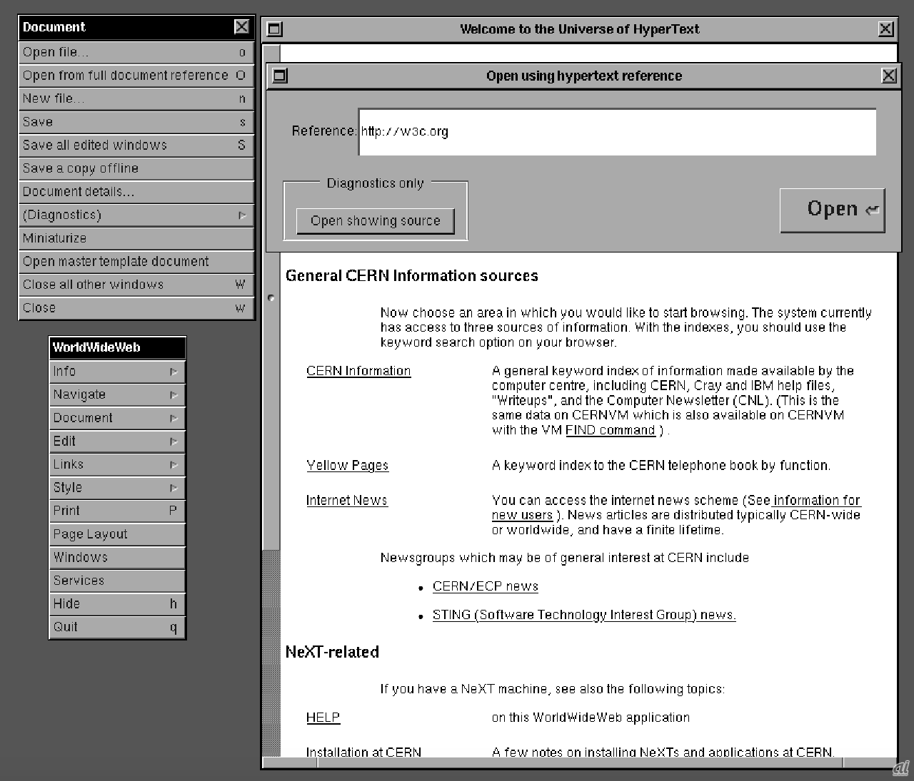
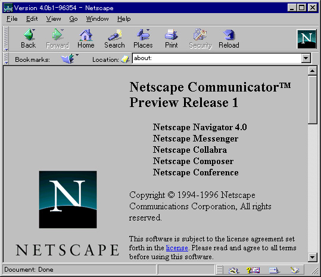
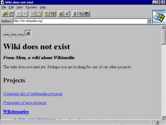
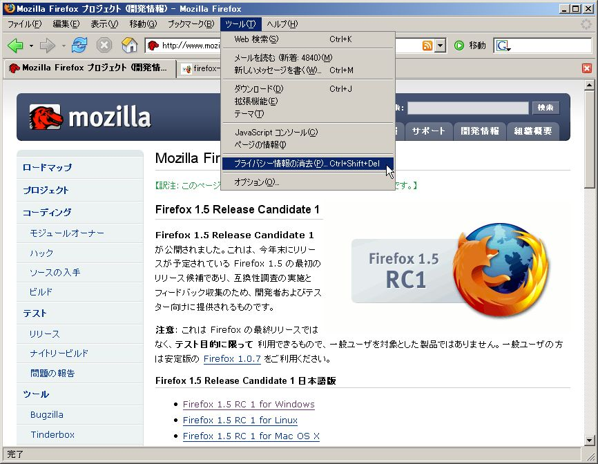
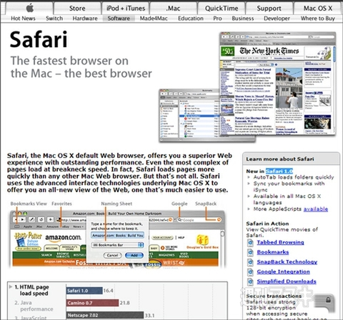
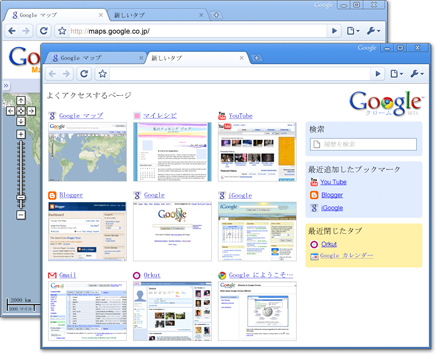
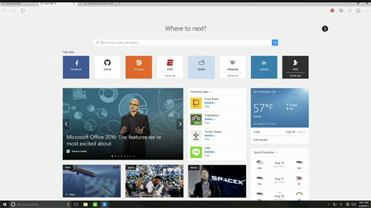

| 1990年 |
WorldWideWeb(Nexus)がティム・バーナーズ＝リーによって開発された。
 |
| 1993年 |
NCSA Mosaicが登場し、グラフィカルなWebブラウザとして普及を始める。

|
| 1994年 |
Netscape Navigatorがリリースされ、商用ブラウザとして急速に人気を博す。

|
| 1995年 |
MicrosoftがInternet Explorerをリリースし、ブラウザ戦争の時代が始まる。

|
| 2002年 |
Mozilla FoundationがMozilla Firefox（当時の名前はPhoenix）をリリースし、オープンソースのブラウザとして注目を集める。

|
| 2003年 |
AppleがSafariを発表し、Macユーザー向けに提供される。

|
| 2008年 |
GoogleがGoogle Chromeをリリースし、高速かつシンプルなブラウザとして登場。

|
| 2015年 |
MicrosoftがMicrosoft Edgeをリリースし、Internet Explorerの後継として導入される。

|
| 2019年 |
MicrosoftがChromiumベースの新しいMicrosoft Edgeを発表し、エンジンを刷新。 |
| 2021年 |
新しいMicrosoft Edge（Chromiumベース）が正式にリリースされ、新たなフェーズに突入する。 |